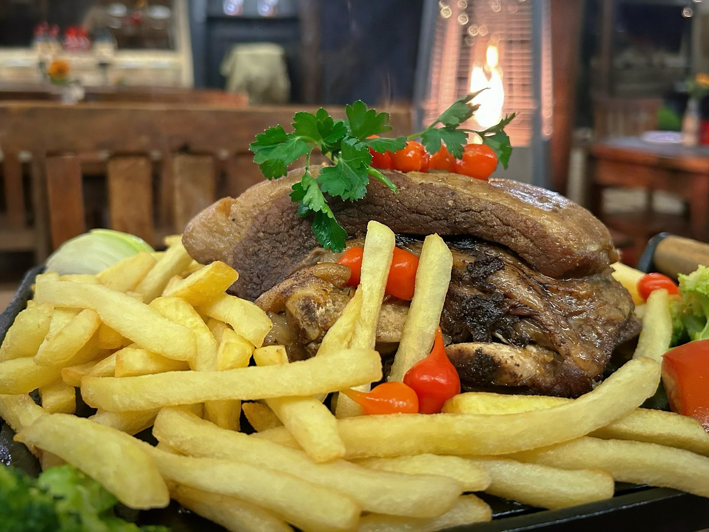
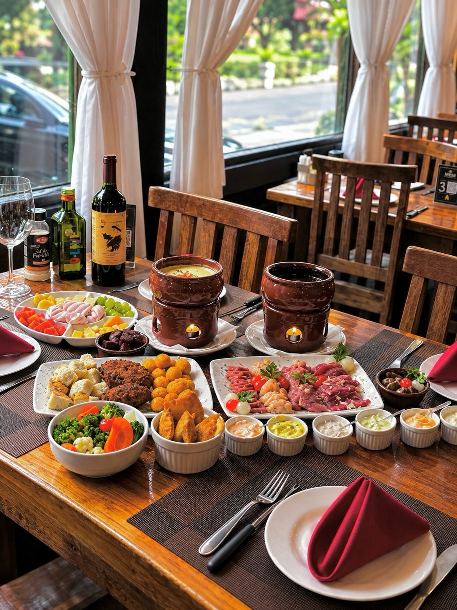
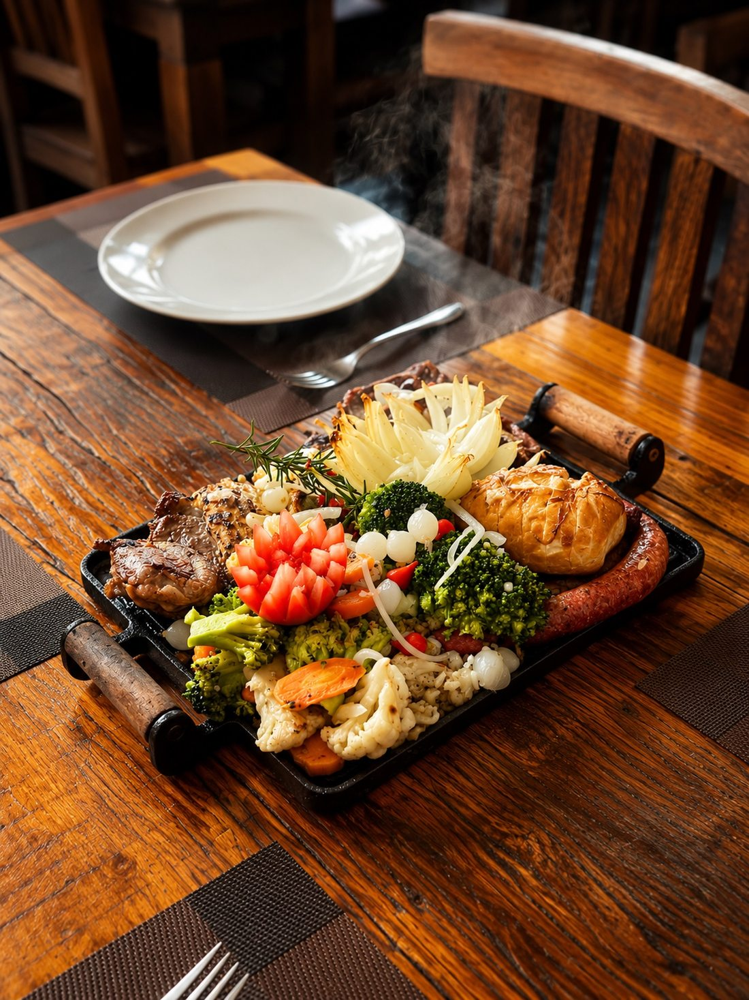
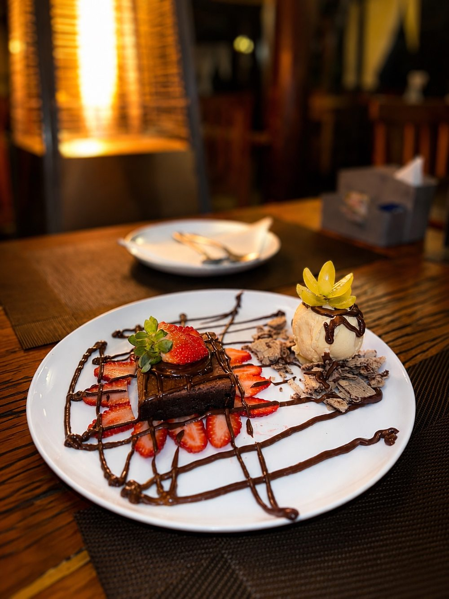
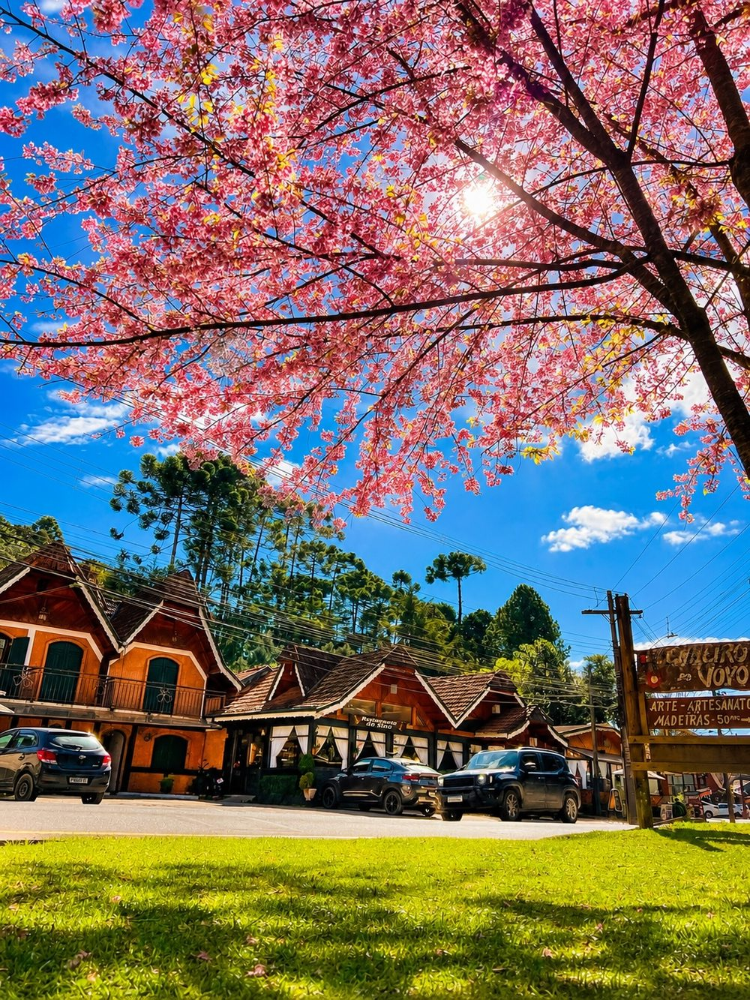

01Costela no bafo
Um dos sabores que marcam a visita ao Restaurante do Sino.
Restaurante do Sino · Campos do Jordão, SP
No Restaurante do Sino, em Campos do Jordão, costela no bafo e rodízio de fondue convidam você a aproveitar os bons encontros na serra.

O restaurante
Em uma visita à serra, há momentos que merecem acontecer sem pressa. No Restaurante do Sino, os sabores da casa convidam você a reunir as pessoas e aproveitar a mesa.
Conheça nosso InstagramDestaques da casa
Escolha o que combina com a sua visita e fale com a equipe para saber mais.

01Um dos sabores que marcam a visita ao Restaurante do Sino.
Uma experiência para compartilhar e aproveitar o clima da serra.
Momentos no Sino



Imagens publicadas pelo Restaurante do Sino no Instagram.
Reportagem
Veja o vídeo divulgado pelo restaurante sobre a participação na TV Vanguarda.
Assistir no InstagramVenha nos visitar
Para confirmar horários e disponibilidade, fale com a equipe pelo WhatsApp.

Ver no mapaAntes da visita
Na Av. Senador Roberto Simonsen, 1420, em Campos do Jordão, SP. Você pode abrir a rota no Google Maps ou no Waze.
Entre os destaques apresentados pelo restaurante estão a costela no bafo e o rodízio de fondue. Consulte a equipe para confirmar a disponibilidade no dia da visita.
Entre em contato pelo WhatsApp (12) 99747-2179 para tirar dúvidas sobre horários e atendimento.
O vídeo divulgado pelo Restaurante do Sino pode ser visto nesta página ou na publicação do Instagram.